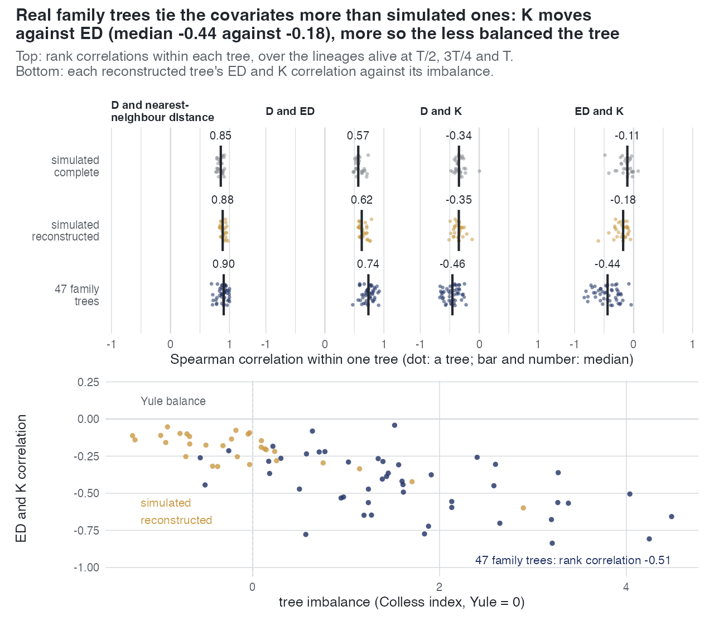

E39 — what the covariates share, tree by tree, on simulated and real trees
| Status | complete |
| Package build | not recorded (the scripts take --lib) |
| Driver / analysis | sim/covariates-shared.R, sim/covariates-shared-shape.R; the simulated clades from sim/covariates-space.R |
| Data | results/E39/per-tree.csv (642 rows), summary.csv (18 rows), shape.csv (77 rows); figure manuscript/figures/fig-p-covariates |
Question
The covariate-overlap correlations of sim/covariates-space.R pool 30 trees and three times, so they are not what one fit sees: a fit reads one tree, and within one tree at one time the pendant age and \(D\) have the same ranks (\(D\) is the pendant age minus the clade mean). E39 computes each pair's correlation within a tree, and asks whether the overlaps the study measured on simulated trees are the ones a user's tree carries. It bears on E21's finding that K and ED enter the path in place of each other, and on how E26/E28's K and ED choices on real families are read.
Design
| item | value |
|---|---|
| covariates | \(D\) (pendant age about the clade mean), ED, the nearest-neighbour distance (NND), \(K\) (splits from the crown) |
| statistic | Spearman correlation of each pair within a tree, over the lineages alive at \(T/2\), \(3T/4\) and \(T\), pooled over the three times |
| set 1 | the 30 dd clades of covariates-space.R (crown age 15, turnover 0.10 at the crown) as complete trees |
| set 2 | the same 30 clades reconstructed (extinct lineages dropped) |
| set 3 | the 47 deposited family trees of E26, read as the analysis of record reads them (tip edges extended to the deepest tip) |
| shape | normalised Colless index (Colless minus its Yule expectation, per tip; 0 = Yule balance) per tree, beside its ED-K and D-ED correlations |
The real trees are reconstructed trees, so the complete-tree correlations, which the model reads, are not observable on them; the simulated pair (complete, reconstructed) measures how far reconstruction moves each correlation.
Pre-set rule
None (descriptive). The result is the distribution of each pair's within-tree correlation in each set, and whether the real trees lie inside the simulated reconstructed range.
Results
Median within-tree Spearman correlation (10th-90th percentile), results/E39/summary.csv:
| pair | simulated, complete (30) | simulated, reconstructed (30) | 47 family trees |
|---|---|---|---|
| D-NND | 0.85 (0.79 to 0.90) | 0.88 (0.84 to 0.94) | 0.90 (0.78 to 0.99) |
| ED-NND | 0.87 (0.80 to 0.89) | 0.87 (0.82 to 0.90) | 0.88 (0.81 to 0.94) |
| D-ED | 0.57 (0.51 to 0.68) | 0.62 (0.58 to 0.73) | 0.74 (0.60 to 0.85) |
| D-K | -0.34 (-0.41 to -0.26) | -0.35 (-0.44 to -0.27) | -0.46 (-0.63 to -0.30) |
| NND-K | -0.16 (-0.22 to -0.06) | -0.20 (-0.28 to -0.11) | -0.31 (-0.52 to -0.13) |
| ED-K | -0.11 (-0.29 to -0.02) | -0.18 (-0.32 to -0.10) | -0.44 (-0.71 to -0.22) |
ED-K on the family trees ranges from -0.84 to -0.04; 33 of 47 are below -0.30, against a reconstructed simulated minimum of -0.60. Imbalance: normalised Colless median 1.43 on the family trees against -0.20 on the reconstructed simulated trees. Across the 47 family trees the rank correlation of imbalance with the ED-K correlation is -0.51 (p = 0.0004).

Conclusion
No rule. On simulated trees, complete or reconstructed, K is close to separate from ED within a tree (median -0.11 and -0.18), so the recovery and selection results for ned and nk were measured where the two covariates carry different information. On the deposited family trees they are not: median -0.44, as far as -0.84, and the tie grows with imbalance, which the family trees have and the simulated dd trees do not. The pairs not involving K move less (D-NND and ED-NND near 0.9 in all sets; D-ED 0.57, 0.62, 0.74). What it means for the real-tree analyses: on an unbalanced family tree a choice between nk and ned is a choice between two covariates that rank the lineages in partly the same order, so the K-versus-ED counts of E26 and E28 are not counts of distinct mechanisms. What it does not show: whether the simulation results would change on trees this unbalanced, which needs generators that produce such trees; and the model's complete-tree correlations on real trees, which are not observable.
Related
- E21 — the K covariate, and the path entering K through ED.
- E26, E28 — the 47 and 29 family trees whose covariates are measured here.
- E40, Real phylogenies — on the 170 class-tree clades and family trees the K factor rises with imbalance (rank correlation 0.53 over 124 read
nkfits) and the ED factor falls (-0.57 over 145); the ED-K correlation is -0.38 on those trees under E39's definition.